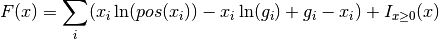
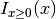
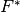
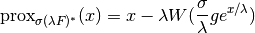
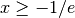
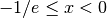

proximal_convex_conj_kl_cross_entropy¶
-
odl.solvers.nonsmooth.proximal_operators.proximal_convex_conj_kl_cross_entropy(space, lam=1, g=None)[source]¶ Proximal factory of the convex conj of cross entropy KL divergence.
Function returning the proximal factory of the convex conjugate of the functional F, where F is the cross entropy Kullback-Leibler (KL) divergence given by:
F(x) = sum_i (x_i ln(pos(x_i)) - x_i ln(g_i) + g_i - x_i) + ind_P(x)
with
xandgin the linear spaceX, andgnon-negative. Here,posdenotes the nonnegative part, andind_Pis the indicator function for nonnegativity.- Parameters
- space
TensorSpace Space X which is the domain of the functional F
- lampositive float, optional
Scaling factor.
- g
spaceelement, optional Data term, positive. If None it is take as the one-element.
- space
- Returns
- prox_factoryfunction
Factory for the proximal operator to be initialized.
See also
proximal_convex_conj_klproximal for related functional
Notes
The functional is given by the expression

The indicator function  is used to restrict the domain of
 such that is defined over whole space
such that is defined over whole space
 . The non-negativity thresholding
. The non-negativity thresholding  is used to define
in the real numbers.
is used to define
in the real numbers.Note that the functional is not well-defined without a prior g. Hence, if g is omitted this will be interpreted as if g is equal to the one-element.
The convex conjugate  of
is
where
 is the variable dual to
is the variable dual to  .
.The proximal operator of the convex conjugate of
is
where
 is the step size-like parameter,
is the step size-like parameter,  is
the weighting in front of the function , and
is
the weighting in front of the function , and  is the
Lambert W function (see, for example, the
Wikipedia article).
is the
Lambert W function (see, for example, the
Wikipedia article).For real-valued input x, the Lambert
function is defined only for
, and it has two branches for values
. However, for inteneded use-cases, where
and  are positive, the argument of
will always be positive.
are positive, the argument of
will always be positive.Wikipedia article on Kullback Leibler divergence. For further information about the functional, see for example this article.
The KL cross entropy functional
, described above, is related to
another functional functional also know as KL divergence. This functional
is often used as data discrepancy term in inverse problems, when data is
corrupted with Poisson noise. This functional is obtained by changing place
of the prior and the variable. See the See Also section.